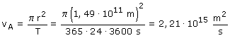
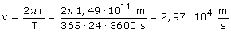
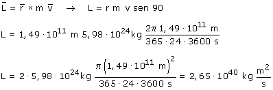

|
La velocidad aerolar es el área que barre, por unidad de tiempo, el vector de posición del planeta. En un año se barrerá toda el área que encierra la órbita:  La velocidad lineal es la longitud de órbita que se recorre por unidad de tiempo. En un año se recorrerá toda la órbita:  |
 |
Momento angular:  |
Curiosidad
El momento angular del planeta es el producto de la velocidad
areolar por el doble de la masa
Newton se dió cuenta de esto y descubrió así
la ley de la gravitación